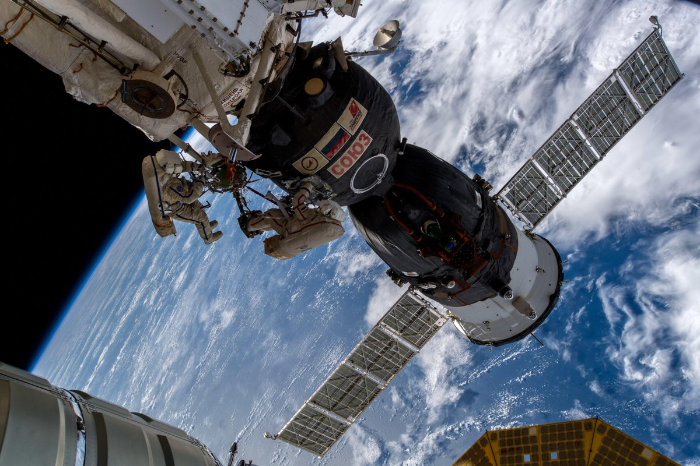
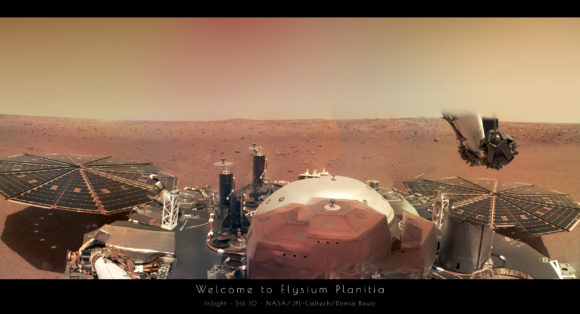

Un paseo espacial para inspeccionar el agujero de la Soyuz MS-09
Los cosmonautas de la Expedición 57 de la ISS, Oleg Kononenko y Serguéi
Prokopyev realizaron
el
11 de diciembre de 2018 un paseo espacial no planeado para inspeccionar el agujero hallado
en
el módulo orbital de la Soyuz MS-09. La actividad extravehicular, denominada EVA-45A —o
VKD-45A
(ВКД-45А) por sus iniciales en ruso— tuvo una duración de 7 horas y 45 minutos (según el
criterio ruso de cálculo del tiempo de paseos espaciales, distinto al estadounidense), casi
una
hora más de lo previsto (que era de 6 horas y 33 minutos). El paseo, el 213º en la historia
de
la ISS, comenzó a las 15:59 UTC y finalizó a las 23:44 UTC. Los dos cosmonautas tuvieron
que
desplazarse desde la esclusa del módulo Pirs (SO-1) hasta la Soyuz MS-09, acoplada al
módulo
Rassvet, para realizar las operaciones de inspección, por lo que se vieron obligados a usar
las
grúas Strelá para desplazarse de un punto a otro.

El sonido de los vientos marcianos de Elysium Planitia
Sí, se parece al viento terrestre al que estamos acostumbrados. ¿Qué
esperabas? Es viento, al fin y al cabo. Eso sí, el asunto tiene «truco». Y es que los
sonidos del viento marciano captados por la sonda InSight de la NASA han tenido que ser
procesados para que los podamos percibir. Es decir, no se ha usado un micrófono para
escuchar el sonido del viento, sino otros instrumentos. Por un lado se ha empleado un
sensor de presión y, por otro, el sismómetro francés SEIS. Una vez colocado en la
superficie marciana, SEIS no podrá captar las vibraciones de la sonda, pero ahora se
encuentra situado sobre la cubierta de la misma. Por eso SEIS ha podido detectar las
vibraciones causadas por el viento sobre los grandes paneles circulares de InSight. Para
que estas vibraciones captadas por el sismómetro SEIS suenen como el viento han tenido que
ser modificadas haciéndolas más agudas (dos octavas por encima), así que por eso decimos
que este sonido del viento marciano tiene truco. No obstante, es posible escuchar
directamente las vibraciones en bruto, sin necesidad de aumentar su frecuencia, como un
ruido muy grave.